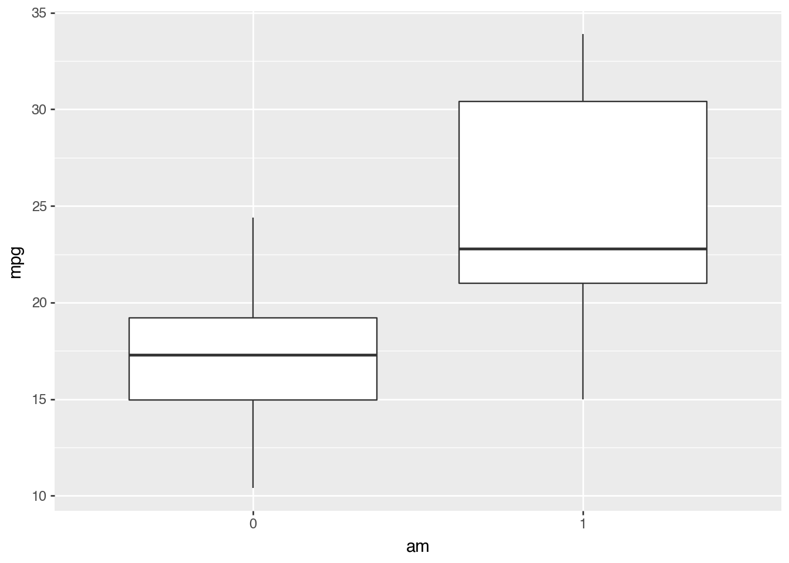
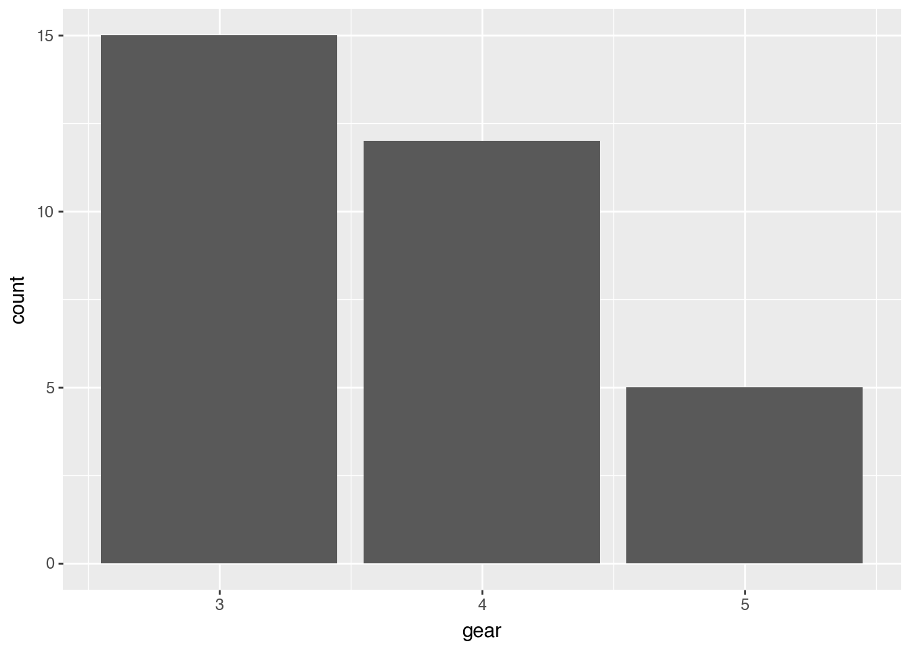
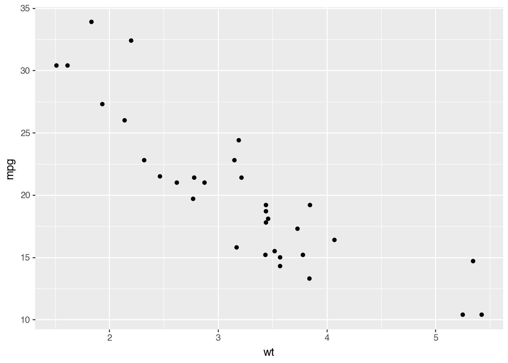
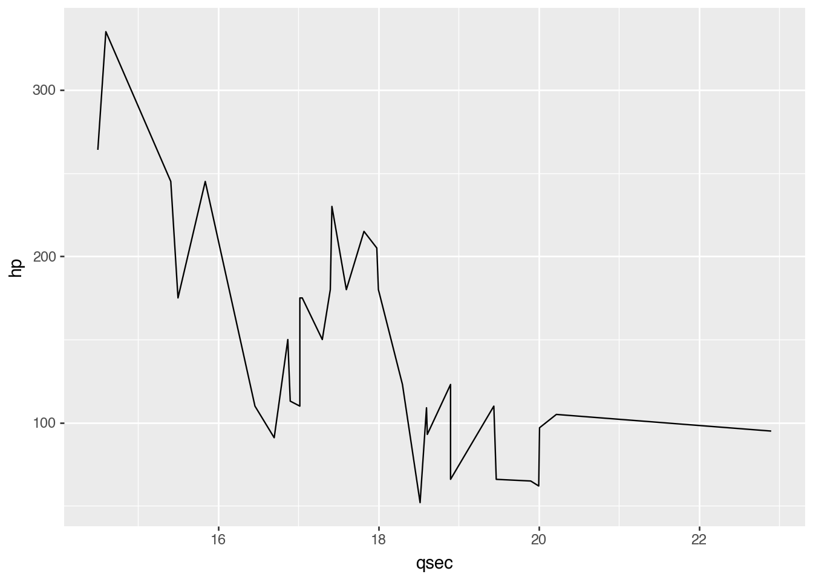

import statsmodels.api as sm
import pandas as pd
mtcars = sm.datasets.get_rdataset("mtcars", "datasets", cache=True).data
df = pd.DataFrame(mtcars)Week 1: Introduction to Data Viz Using mtcars Dataset
Data Visualization Using plotnine
The Palmer Penguins dataset had a variety of column types with which to explore some nice visualizations. The mtcars dataset is another popular dataset for doing some simple data work, but does not contain the same types of variables.
Run the following code to load the mtcars dataset and explore the observations and variables contained within. To learn more about this dataset check out this site
df.describe()| mpg | cyl | disp | hp | drat | wt | qsec | vs | am | gear | carb | |
|---|---|---|---|---|---|---|---|---|---|---|---|
| count | 32.000000 | 32.000000 | 32.000000 | 32.000000 | 32.000000 | 32.000000 | 32.000000 | 32.000000 | 32.000000 | 32.000000 | 32.0000 |
| mean | 20.090625 | 6.187500 | 230.721875 | 146.687500 | 3.596563 | 3.217250 | 17.848750 | 0.437500 | 0.406250 | 3.687500 | 2.8125 |
| std | 6.026948 | 1.785922 | 123.938694 | 68.562868 | 0.534679 | 0.978457 | 1.786943 | 0.504016 | 0.498991 | 0.737804 | 1.6152 |
| min | 10.400000 | 4.000000 | 71.100000 | 52.000000 | 2.760000 | 1.513000 | 14.500000 | 0.000000 | 0.000000 | 3.000000 | 1.0000 |
| 25% | 15.425000 | 4.000000 | 120.825000 | 96.500000 | 3.080000 | 2.581250 | 16.892500 | 0.000000 | 0.000000 | 3.000000 | 2.0000 |
| 50% | 19.200000 | 6.000000 | 196.300000 | 123.000000 | 3.695000 | 3.325000 | 17.710000 | 0.000000 | 0.000000 | 4.000000 | 2.0000 |
| 75% | 22.800000 | 8.000000 | 326.000000 | 180.000000 | 3.920000 | 3.610000 | 18.900000 | 1.000000 | 1.000000 | 4.000000 | 4.0000 |
| max | 33.900000 | 8.000000 | 472.000000 | 335.000000 | 4.930000 | 5.424000 | 22.900000 | 1.000000 | 1.000000 | 5.000000 | 8.0000 |
The statement “the mtcars dataset does not contain the same types of variables as the penguins dataset” is a little true and a little false. There are no variables that contain text values, BUT there are variables that it makes sense to consider categorical variables. In most situations, it makes sense to treat the values of categorical variables as text values instead of numeric values.
Use the astype() method to convert the categorical variables of the mtcars (df) dataset to have text values in the code chunk below. We’ve done one for you!
df["am"] = df["am"].astype(str)
df["vs"] = df["vs"].astype(str)
df["cyl"] = df["cyl"].astype(str)If you print out your new dataset, is it clear that the variables have been converted to text values? If so, how can you tell?
It should also be clear by how plotnine treats these variables.
Create side-by-side boxplots of the
mpgvariable by the different values of theamvariable. What happens if you convert theamvariable back to float values and then try to create this same plot? Explain the differences between the two plots.Create overlaid histograms of the
hpvariable for the different values of thecylvariable. What happens if you convert thecylvariable back to float values and then try to create this same plot? Explain the differences between the two plots.
import plotnine as p9
(p9.ggplot(df,
p9.aes(
x = "am",
y = "mpg",
))
+ p9.geom_boxplot()
)
df["am"] = df["am"].astype(float)
(p9.ggplot(df,
p9.aes(
x = "am",
y = "mpg",
))
+ p9.geom_boxplot()
)
When am is a string, the plot is two separate boxplots and when am is a float, the plot is one boxplot. The first plot creates separate groups for transmission types, allowing for comparing their mpg distributions. The second plot combines all cars into a single distribution, losing the ability to compare between transmission types.
(p9.ggplot(df,
p9.aes(
x = "hp",
fill = "cyl"
))
+ p9.geom_histogram()
)/opt/anaconda3/lib/python3.13/site-packages/plotnine/stats/stat_bin.py:112: PlotnineWarning: 'stat_bin()' using 'bins = 6'. Pick better value with 'binwidth'.
df["cyl"] = df["cyl"].astype(float)
(p9.ggplot(df,
p9.aes(
x = "hp",
fill = "cyl"
))
+ p9.geom_histogram()
)/opt/anaconda3/lib/python3.13/site-packages/plotnine/stats/stat_bin.py:112: PlotnineWarning: 'stat_bin()' using 'bins = 6'. Pick better value with 'binwidth'.
When cyl is a string, the plot shows separate colors for each cylinder count and when cyl is a float, the plot shows as one gray color combining all cylinder counts. The first plot creates separate colors for cylinder counts, allowing to see horsepower distributions for each cylinder count. The second plot combines all cylinder counts into a single gray color, losing the ability to see horsepower by cylinder count.
Some of these variables, like the cyl variable, have numeric values that actually make sense as numbers (i.e. the number of cylinders in the engine). However, it doesn’t make the most sense to “do math” with this type of variable (e.g. take averages and such) because there are so few different value this can take on AND they’re an explicit choice made by the car manufacturer. So, it makes more sense to treat the cyl variable as a categorical variable despite it having numeric values.
You will need to keep these kinds of nuances about data in mind as you work with an increasing variety and richness of data, and do more complex things with them.
Choose 3 new geometries from the data-to-viz website for graphs that you’d like to explore using the mtcars dataset, and then create those graphs!
(p9.ggplot(df,
p9.aes(
x = "gear"
))
+p9.geom_bar()
)
(p9.ggplot(df,
p9.aes(
x = "wt",
y = "mpg"
))
+ p9.geom_point()
)
(p9.ggplot(df,
p9.aes(
x = "qsec",
y = "hp",
))
+ p9.geom_line()
)